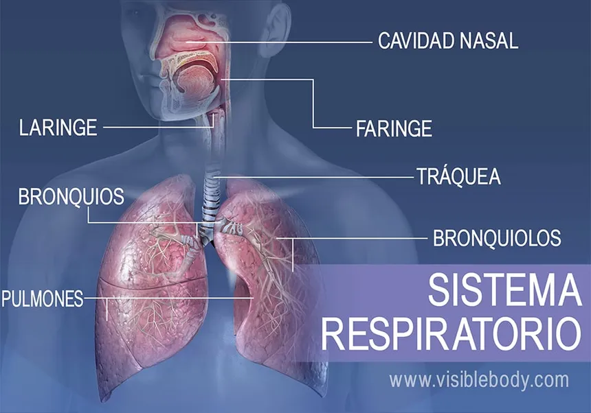

Introducción

El sistema respiratorio es el conjunto de órganos encargados de llevar oxígeno a las células del cuerpo y eliminar dióxido de carbono, un producto de desecho del metabolismo celular.
Órganos del sistema respiratorio
-

- Nariz y Boca: Donde comienza el proceso de respiración. El aire es inhalado a través de la nariz y/o boca.
- Faringe: Canal común para el paso del aire y los alimentos.
- Laringe: Contiene las cuerdas vocales y facilita el paso del aire hacia la tráquea.
- Tráquea: Tubo que lleva el aire desde la laringe hasta los bronquios.
- Bronquios: Conductos que llevan el aire a los pulmones.
- Pulmones: Órganos principales de la respiración donde ocurre el intercambio de gases.
- Alvéolos: Pequeños sacos en los pulmones donde se lleva a cabo el intercambio de oxígeno y dióxido de carbono.
Funciones de las Partes del sistema respiratorio
Nariz y Boca
La nariz y la boca permiten la entrada de aire al sistema respiratorio. La nariz filtra, humidifica y calienta el aire antes de que llegue a los pulmones.
Faringe
La faringe es un conducto común para el paso del aire hacia la tráquea y los alimentos hacia el esófago.
Laringe
La laringe es una estructura que se encuentra en la parte superior de la tráquea y contiene las cuerdas vocales. Además de facilitar el paso del aire hacia la tráquea, la laringe es esencial para la producción de sonidos y la fonación en los humanos. Las cuerdas vocales vibran cuando el aire pasa a través de ellas, produciendo sonidos que luego son modulados por la lengua y los labios para formar el habla.
Tráquea
La tráquea es un tubo fibroso y flexible que conecta la laringe con los bronquios. Está compuesta por anillos de cartílago que le proporcionan rigidez y evitan que se colapse durante la inhalación. La tráquea también está revestida por una mucosa que produce moco para atrapar partículas extrañas y ayudar en el proceso de limpieza del aire que respiramos.
Bronquios
Los bronquios son dos conductos que se ramifican desde la tráquea y llevan el aire hacia los pulmones. Una vez dentro de los pulmones, los bronquios se subdividen en bronquiolos cada vez más pequeños. Esta ramificación continua permite que el aire alcance áreas específicas de los pulmones, asegurando así un intercambio eficiente de gases en los alvéolos.
Alvéolos
Los alvéolos son pequeños sacos de aire ubicados en los pulmones donde ocurre el intercambio de gases entre el aire y la sangre. Están rodeados por una red de capilares sanguíneos. El oxígeno inhalado pasa a través de las delgadas paredes de los alvéolos y se difunde hacia la sangre, mientras que el dióxido de carbono, un producto de desecho del metabolismo celular, se difunde desde la sangre hacia los alvéolos para ser exhalado.
Una respiración saludable es fundamental para el bienestar y funcionamiento óptimo del organismo. Un sistema respiratorio eficiente proporciona suficiente oxígeno a las células del cuerpo, lo cual es esencial para la producción de energía a través del proceso de respiración celular. Además, elimina el dióxido de carbono, un producto de desecho metabólico que puede ser perjudicial si se acumula en exceso en el cuerpo.
La buena salud del sistema respiratorio también es crucial para mantener la homeostasis ácido-base en el organismo y para el correcto funcionamiento del sistema cardiovascular. Mantener una respiración adecuada a través de prácticas como la respiración consciente y el ejercicio físico regular contribuye a una vida más saludable y activa.
Importancia de una Respiración Saludable
Una respiración saludable es crucial para proporcionar suficiente oxígeno a las células del cuerpo y eliminar dióxido de carbono. Esto es esencial para el funcionamiento óptimo del organismo.